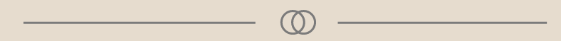

05.01.01 VIDEOSITE
Beskrivelse af opgaven

Denne opgave er lavet i Tema 5. I denne opgave skulle vi interviewe en person, der beretter om en passion. I videoen skulle vi have b-rolls, hvor hovedpersonen foretager en handling, eller gør noget som har betydning for personen.
Der skulle desuden være et establishing shot, og en titel. Ud over dette skulle sitet indeholde minimum 4 fotos fra optagedagen.
Hvad jeg lærte
I forbindelse med denne opgave arbejdede jeg med filformatet h.264, storyboard og intertviewguide.
Desuden lærte jeg om filmens grundelementer såsom frame, scene og sekvens samt klippeteori såsom total, halvtotal, nær, halvnær osv.
Ud over dette lærte jeg, hvordan man implementere en video på sociale mediedelingsplatforme.
Processen

Til denne opgave startede jeg med at lave et storyboard over interviewet, for at få et overblik over hvilke skud jeg gerne ville have.
Herefter brugte jeg interview guiden, for at finde ud af hvad jeg gerne ville have svar på.
Jeg valgte at filme på et DSLR-kamera og optage lyd på en smartphone. Da jeg havde filmet alt det jeg skulle bruge, eksportere jeg alt mit materiale over i Premiere Pro, hvor jeg klippede det hele sammen og brugte color correction for at få en mere behagelig farve på billedet.
Herefter fandt jeg musik på Epidemic Sound, som jeg satte hen over videoen og til sidst eksporterede jeg videoen i videoformatet H.264, så den kunne uploades på YouTube og sættes ind på min hjemmeside.